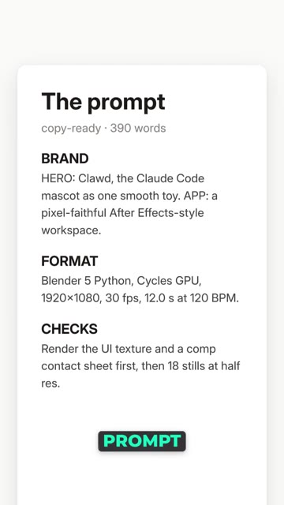
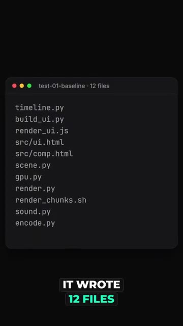
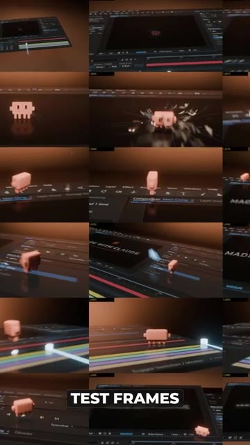
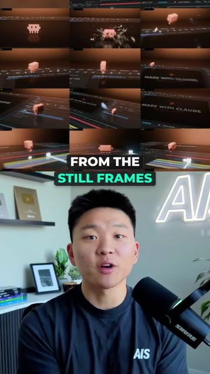
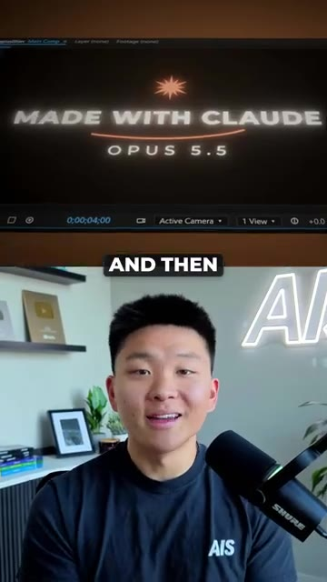
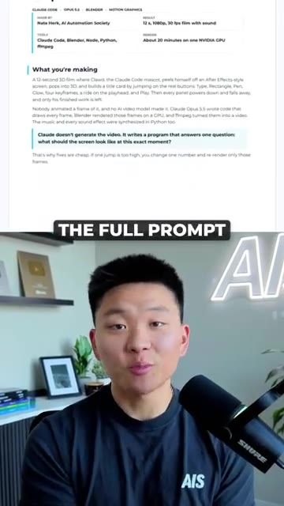

So Claude just made this entire 3D animation from code. Here's how. Someone online shared a 390 word prompt for this. So I gave it to Opus 5.5 inside of Claude Code just to see if it could actually pull it off. It wrote 12 files, the interface, the 3D scene in Blender, the soundtrack, and the whole render pipeline. The first test frames were kind of rough. The buttons were in the wrong spots, the character came out pinkish, and the title ran off the screen.
Interface & Outils : Système de fichiers (Terminal), Logiciel de rendu 3D/Montage vidéo (type After Effects/Blender).
Contenu textuel & Code : Spécifications techniques du prompt (Brand, Format, Checks), liste de fichiers source (timeline.py, scene.py, render.py, etc.), vignettes de prévisualisation d'animation.
Action / Démonstration : Génération et structuration de code par une IA pour la création d'une séquence d'animation complexe incluant rendu 3D, interface utilisateur et bande sonore.

🔍 Agrandir
🔍 Agrandir
🔍 AgrandirClaude then caught all of those mistakes from the still frames that it took and then re-rendered all the fixes. And then I got this output. So if you guys want to see the full prompt in the setup guide, just comment Blender and I'll send it right over to you.
Interface & Outils : Adobe After Effects (interface de montage), éditeur de texte/documentation (format de guide projet).
Contenu textuel & Code : Titres textuels "MADE WITH CLAUDE / OPUS 5.5", notes techniques sur la génération par code (Claude Code, Blender, Python, ffmpeg).
Action / Démonstration : Présentation du résultat final du projet et démonstration visuelle des étapes du workflow de rendu assisté par IA.

🔍 Agrandir
🔍 Agrandir
🔍 Agrandir